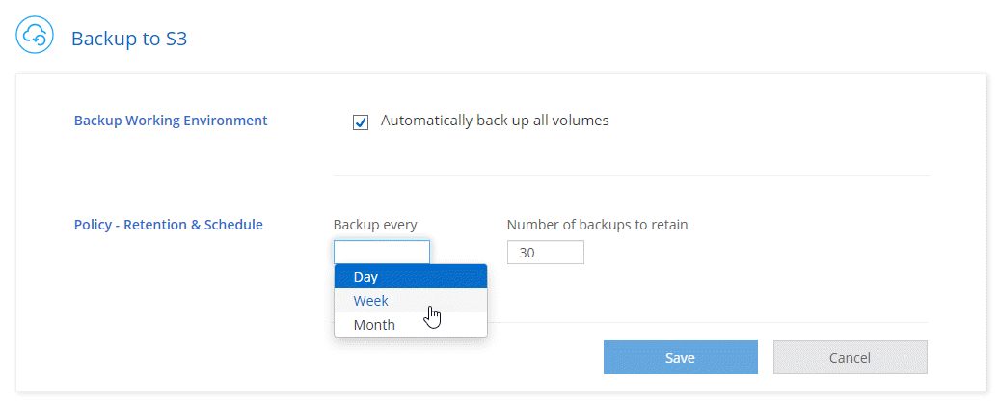
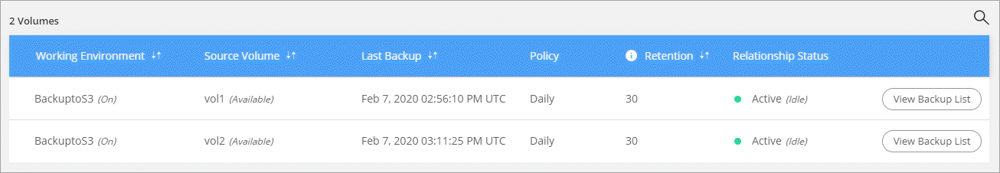
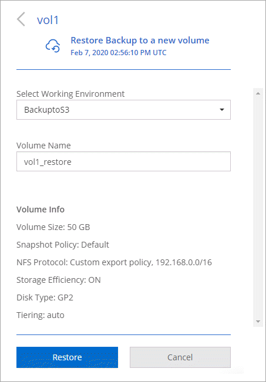
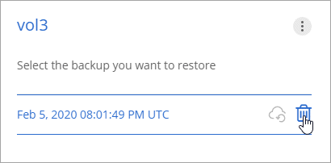

データをAmazon S3にバックアップする GitHubで編集 ドキュメントの変更をリクエストする
寄稿者
S3へのバックアップは、Cloud Volumes ONTAPのアドオン機能であり、保護のための完全に管理されたバックアップおよび復元機能、およびクラウドデータの長期アーカイブを提供します。バックアップは、短期的なリカバリまたはクローン作成に使用されるボリュームSnapshotコピーとは無関係に、S3オブジェクトストレージに保存されます。この機能は、NetAppのクラウドバックアップサービスによって強化されています。
S3へのバックアップを有効にすると、クラウドバックアップサービスがデータの完全バックアップを実行します。追加のバックアップはすべて増分バックアップです。つまり、変更されたブロックと新しいブロックのみがバックアップされます。バックアップスケジュールは、毎日、毎週、または毎月に設定できます。
すべてのバックアップおよび復元操作にはCloud Managerを使用する必要があることに注意してください。 ONTAPまたはAmazon S3から直接実行されたアクションは、サポートされない構成になります。
クイックスタート
これらの手順に従ってすぐに開始するか、詳細を確認するには残りのセクションまでスクロールします。
 構成のサポートを確認します
構成のサポートを確認します
以下を確認してください。
Cloud Volumes ONTAP 9.4以降は、サポートされているAWSリージョンで実行されています：バージニア北部、オレゴン、アイルランド、フランクフルト、またはシドニー
新しいCloud Manager Marketplaceオファリングに登録しました
TCPポート5010は、Cloud Volumes ONTAPのセキュリティグループのアウトバウンドトラフィック用に開いています（デフォルトで開いています）
TCPポート8088は、Cloud Managerのセキュリティグループのアウトバウンドトラフィック用に開いています（デフォルトで開いています）
次のエンドポイントには、Cloud Managerからアクセスできます。
https://w86yt021u5.execute-api.us-east-1.amazonaws.com/production/whitelist
Cloud ManagerがVPCに最大2つのインターフェースVPCエンドポイントを割り当てる余地があります（VPCあたりのAWSの制限は20です）
Cloud Managerには、最新のCloud ManagerポリシーにリストされているVPCエンドポイント権限を使用する権限があります。
"ec2:DescribeVpcEndpoints", "ec2:CreateVpcEndpoint", "ec2:ModifyVpcEndpoint", "ec2:DeleteVpcEndpoints"
 新規または既存のシステムでS3へのバックアップを有効にします
新規または既存のシステムでS3へのバックアップを有効にします
新しいシステム：S3へのバックアップ機能は、作業環境ウィザードでデフォルトで有効になっています。オプションを有効のままにしてください。
既存のシステム：作業環境を開き、バックアップ設定アイコンをクリックしてバックアップを有効にします。

 必要に応じて、バックアップポリシーを変更します
必要に応じて、バックアップポリシーを変更します
デフォルトのポリシーは毎日ボリュームをバックアップし、各ボリュームのバックアップコピーを30個保持します。毎週または毎月のバックアップに変更するか、保持するバックアップコピーの数を変更します。

 必要に応じてデータを復元します
必要に応じてデータを復元します
Cloud Managerの上部で[ バックアップと復元 ]をクリックして、ボリュームを選択し、バックアップを選択して、バックアップから新しいボリュームにデータを復元します。

必要条件
次の要件を読んで、S3へのボリュームのバックアップを開始する前に、サポートされている構成があることを確認してください。
- サポートされているONTAPバージョン
S3へのバックアップは、Cloud Volume ONTAP 9.4以降でサポートされています。
- サポートされているAWSリージョン
S3へのバックアップは、次のAWSリージョンのCloud Volumes ONTAPでサポートされています。
米国東部（バージニア北部）
米国西部（オレゴン）
EU（アイルランド）
EU（フランクフルト）
アジア太平洋（シドニー）
- 必要なAWSアクセス許可
Cloud Managerにアクセス許可を提供するIAMロールには、次のものが含まれている必要があります。
"ec2:DescribeVpcEndpoints", "ec2:CreateVpcEndpoint", "ec2:ModifyVpcEndpoint", "ec2:DeleteVpcEndpoints"- AWSサブスクリプションの要件
3.7.3リリース以降、AWS Marketplaceで新しいCloud Managerサブスクリプションが利用可能になりました。このサブスクリプションにより、Cloud Volumes ONTAP 9.6 PAYGOシステムとS3へのバックアップ機能の展開が可能になります。 S3へのバックアップを有効にする前に、この新しいCloud Managerサブスクリプションをサブスクライブする必要があります。 S3へのバックアップ機能の請求は、このサブスクリプションを通じて行われます。
- ポート要件
Cloud Volumes ONTAPからCloud Backup Serviceへのアウトバウンドトラフィック用にTCPポート5010が開いている必要があります。
TCPポート8088は、Cloud Managerのセキュリティグループのアウトバウンドトラフィック用に開いている必要があります。
定義済みのセキュリティグループを使用した場合、これらのポートは既に開いています。ただし、独自のポートを使用した場合は、これらのポートを開く必要があります。
- アウトバウンドインターネットアクセス
次のエンドポイントがCloud Managerからアクセス可能であることを確認します。
https://w86yt021u5.execute-api.us-east-1.amazonaws.com/production/whitelistCloud Managerはこのエンドポイントに接続して、AWSアカウントIDをCloud Backup Serviceの許可されたユーザーのリストに追加します。
- インターフェイスVPCエンドポイント
S3へのバックアップ機能を有効にすると、Cloud Managerは、Cloud Volumes ONTAPが実行されているVPCにインターフェイスVPCエンドポイントを作成します。このバックアップエンドポイントは、クラウドバックアップサービスが実行されているNetApp VPCに接続します 。ボリュームを復元する場合、Cloud Managerは追加のインターフェイスVPCエンドポイントである復元エンドポイントを作成します 。
VPC内の追加のCloud Volumes ONTAPシステムは、これら2つのVPCエンドポイントを使用します。
インターフェイスVPCエンドポイントのデフォルトの制限は、VPCあたり20です。この機能を有効にする前に、VPCが制限に達していないことを確認してください。
新しいシステムでS3へのバックアップを有効にする
S3へのバックアップ機能は、作業環境ウィザードでデフォルトで有効になっています。オプションを有効のままにしてください。
[ Create Cloud Volumes ONTAP]をクリックします 。
クラウドプロバイダーとしてAmazon Web Servicesを選択し、単一ノードまたはHAシステムを選択します。
[詳細と資格情報]ページに入力します。
[S3へのバックアップ]ページで、機能を有効のままにして[ 続行 ]をクリックします。
![作業環境ウィザードに[S3へのバックアップ]オプションを表示します。](./media/screenshot_backup_to_s3.gif)
ウィザードのページに入力して、システムを展開します。
S3へのバックアップ機能はシステムで有効になっており、毎日ボリュームをバックアップし、30個のバックアップコピーを保持します。 スケジュールとバックアップの保持を変更する方法を学びます 。
既存のシステムでS3へのバックアップを有効にする
サポートされている構成を実行している限り、既存のCloud Volumes ONTAPシステムでS3へのバックアップを有効にできます。詳細については、 要件を参照してください。
作業環境を開きます。
バックアップ設定アイコンをクリックします。
[ すべてのボリュームを自動的にバックアップする]を選択します 。
スケジュールとバックアップの保持を選択し、[ 保存 ]をクリックします 。
S3へのバックアップ機能は、各ボリュームの初期バックアップの取得を開始します。
スケジュールとバックアップ保持の変更
デフォルトのポリシーは毎日ボリュームをバックアップし、各ボリュームのバックアップコピーを30個保持します。毎週または毎月のバックアップに変更でき、保持するバックアップコピーの数を変更できます。
毎日、毎週、毎月の組み合わせはサポートされていません。毎日、毎週、毎月を選択できます。
バックアップポリシーを変更しても、作成された以前のバックアップには影響しません。たとえば、現在のポリシーが毎月ボリュームをバックアップし、30個のバックアップコピーを保持するとします。ポリシーを変更して、毎日バックアップし、30個のバックアップコピーを保持します。 毎月のバックアップコピーは、削除するまで残ります。
作業環境を開きます。
バックアップ設定アイコンをクリックします。
スケジュールとバックアップの保持を変更し、[ 保存 ]をクリックします 。
ボリュームの復元
バックアップからデータを復元すると、Cloud Managerは新しいボリュームへのフルボリューム復元を実行します。データを同じ作業環境または異なる作業環境に復元できます。
Cloud Managerの上部にある[ バックアップと復元 ]をクリックします。
復元するボリュームを選択します。

復元元のバックアップを見つけて、復元アイコンをクリックします。

ボリュームを復元する作業環境を選択します。
ボリュームの名前を入力します。
復元をクリックします。

バックアップを削除する
Cloud Managerから削除するまで、すべてのバックアップはS3に保持されます。ボリュームを削除したり、Cloud Volumes ONTAPシステムを削除したりしても、バックアップは削除されません。
Cloud Managerの上部にある[ バックアップと復元 ]をクリックします。
ボリュームを選択します。
削除するバックアップを見つけて、削除アイコンをクリックします。

バックアップを削除することを確認します。
S3へのバックアップを無効にする
S3へのバックアップを無効にすると、システム上の各ボリュームのバックアップが無効になります。既存のバックアップは削除されません。
作業環境を開きます。
バックアップ設定アイコンをクリックします。
すべてのボリュームの自動バックアップを無効にして、[ 保存 ]をクリックします 。
S3へのバックアップの仕組み
次のセクションでは、S3へのバックアップ機能について詳しく説明します。
バックアップが存在する場所
バックアップコピーは、Cloud Volumes ONTAPシステムが配置されているのと同じリージョンの、NetAppが所有するS3バケットに保存されます。
バックアップは増分です
データの最初の完全バックアップの後、追加のバックアップはすべて増分です。つまり、変更されたブロックと新しいブロックのみがバックアップされます。
バックアップスケジュールは、毎日、 または毎週、 または毎月です
これらのバックアップ頻度オプションの組み合わせはサポートされていません。毎日、毎週、毎月を選択できます。
バックアップは深夜に行われます
毎日午前0時過ぎに毎日のバックアップが開始されます。
毎週のバックアップは、日曜日の午前0時から始まります。
毎月のバックアップは、毎月1日の真夜中の直後に開始されます。
現時点では、ユーザーが指定した時間にバックアップ操作をスケジュールすることはできません。
バックアップコピーはCloud Centralアカウントに関連付けられています
バックアップコピーは、Cloud Managerが存在するCloud Centralアカウントに関連付けられています。
同じCloud Centralアカウントに複数のCloud Managerシステムがある場合、各Cloud Managerシステムには同じバックアップリストが表示されます。これには、他のCloud ManagerシステムからのCloud Volumes ONTAPインスタンスに関連付けられたバックアップが含まれます。
バックアップポリシーはシステム全体です
バックアップスケジュールと保持するバックアップの数は、システムレベルで定義されます。システム上の各ボリュームに異なるポリシーを設定することはできません。
セキュリティ
バックアップデータは、保管中のAES-256ビット暗号化と飛行中のTLS 1.2 HTTPS接続で保護されます。
クラウドバックアップサービスは、バックアップデータのエンドツーエンドのセキュリティを提供します。データは、セキュリティで保護されたDirect Connectリンクを介してサービスに送信され、AES 256ビット暗号化によって保管時に保護されます。暗号化されたデータは、HTTPS TLS 1.2接続を使用してクラウドに書き込まれます。また、データはセキュアなVPCエンドポイント接続を介してのみAmazon S3に送信されるため、インターネット経由でトラフィックは送信されません。
各ユーザーには、サービスが所有する全体的な暗号化キーに加えて、テナントキーが割り当てられます。この要件は、銀行で顧客を安全に開くために1組のキーが必要になることに似ています。クラウド資格情報としてのすべてのキーは、サービスによって安全に保存され、サービスの保守を担当する特定のNetApp担当者のみに制限されます。
制限事項
次のインスタンスタイプのいずれかを使用する場合、Cloud Volumes ONTAPシステムは最大20のボリュームをS3にバックアップできます。
m4.xlarge
m5.xlarge
r4.xlarge
r5.xlarge
Cloud Managerの外部で作成したボリュームは、S3に自動的にバックアップされません。
たとえば、ONTAP CLI、ONTAP API、またはSystem Managerからボリュームを作成する場合、ボリュームは自動的にバックアップされません。
これらのボリュームをバックアップする場合は、S3へのバックアップを無効にしてから再度有効にする必要があります。
バックアップからデータを復元すると、Cloud Managerは新しいボリュームへのフルボリューム復元を実行します。この新しいボリュームは、S3に自動的にバックアップされません。
復元操作から作成されたボリュームをバックアップする場合は、S3へのバックアップを無効にしてから再度有効にする必要があります。
サイズが50 TB以下のボリュームをバックアップできます。
Cloud Backup Serviceは、ボリュームの合計245までのバックアップを維持できます。
S3へのバックアップが有効になっている場合、Cloud Volumes ONTAPシステムではWORMストレージはサポートされません。